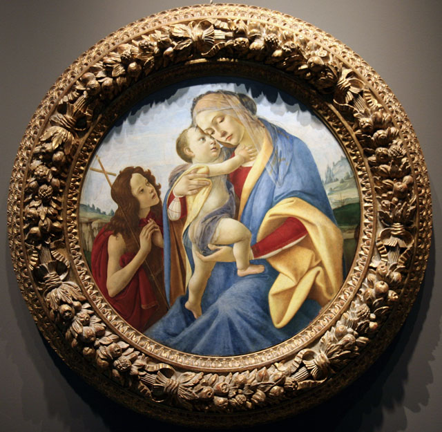
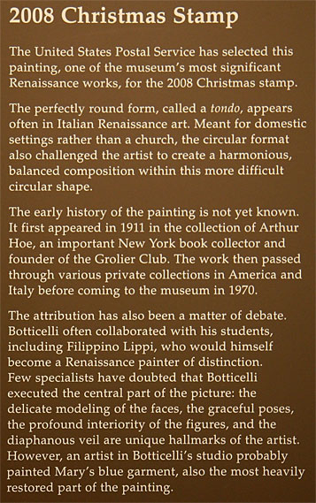
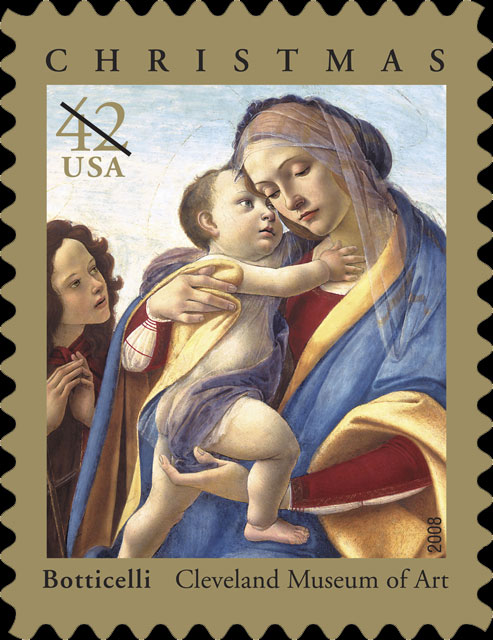
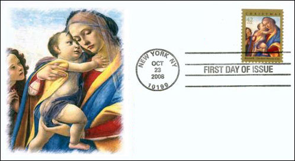
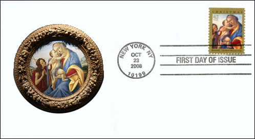

Sandro Botticelli, Virgin and Child
SANDRO BOTTICELLI
Virgin and Child With the Young John the Baptist
Working from a detail of a painting titled “Virgin and Child With the Young John the Baptist” by the Italian master Sandro Botticelli, designer Richard Sheaff of Scottsdale, AZ, created the Postal Service’s 2008 Christmas stamp. The painting, tempera and oil on wood, dates to around 1490 and is now in the collection of the Cleveland Museum of Art.

Paintings information:
Title: Virgin and Child with the Young John the Baptist
Artist: Sandro Botticelli (Italian, 1444/5 - 1510), and Workshop
Medium: tempera and oil on wood
Measurements: Framed: 115 cm x 12.5 cm, Diameter: 68 cm
Date: about 1490
Source: Cleveland Museum of Art
Many thanks to the Cleveland Museum of Art that allows for the taking of pictures in the most parts of this excellent Museum (photographer: Victor Manta, July 2009). The rext rectangle shown above is displayed in the museum near the painting.

Working from a detail of a painting titled “Virgin and Child With the Young John the Baptist” by the Italian master Sandro Botticelli, designer Richard Sheaff of Scottsdale, AZ, created the Postal Service’s 2008Christmas stamp.

The painting, tempera and oil on wood, dates to around 1490 and is now in the collection of the Cleveland Museum of Art. It presents one of the most common figural groups in religious art. Botticelli’s beautifully rendered figures capture the tender relationship between mother and child and at the same time suggest Mary’s foreknowledge of Christ’s fate.

Notes:
- In order to make the picture rectangular, the designer had to add some sky in the corners
- The image of St. John was clipped a lot
- My picture shows very similar colors when compared with the zoomed stamp
- The big image of the stamp looks much more sharper than the original painting, probably because it will appear then on a rather small stamp.Links:
- Botticelli at Uffizi Gallery, Florence - 1
- Botticelli at Uffizi Gallery, Florence - 2
- Christmas Art - 2008